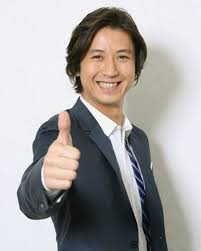

Shosuke Tanihara is a Japanese actor. He is married to Emi Miyake and they have a daughter.
- Gender: Male
- Birthday: July 8, 1972
| |
Shosuke Tanihara is a Japanese actor. He is married to Emi Miyake and they have a daughter.
|
 |
|---|
 |
Reshiram |
|
Reshiram is a legendary Pokemon from Unova region. It is a member of Tao trio. Reshiram is capable of moving the world's atomsphere and changing the weather. It believes in truth. |